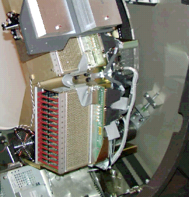
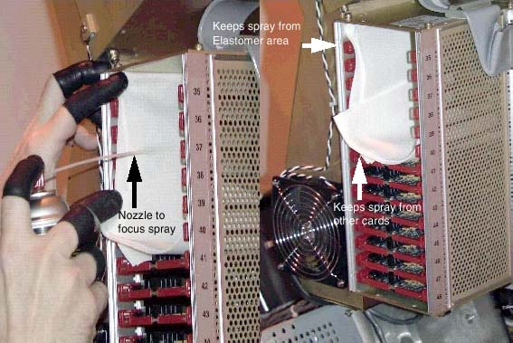

Proprietary to General Electric
Direction 5114043-800, Rev# 9
LightSpeed 3.X Service Methods (Advanced)
Proprietary to General Electric |
| Required Persons | Preliminary Reqs | Procedure | Finalization |
|---|---|---|---|
| 1 |
The following procedure should be followed when DAS Converter boards and/or chassis need cleaning, or Converter boards are replaced for microphonics or noise resulting in image artifacts (rings, bands, streaks and smudges).
| Last Revised on: | March 23, 2005 |
| Item | Qty | Effectivity | Part# | Manufacturer | |
|---|---|---|---|---|---|
| Static Wrist Strap and cord | 1 | - | - | - | |
| DAS/DET Interface Kit: Contains rubber gloves, static nozzle for use with compressed air, and static bags needed by this procedure. | 1 | - | - | - | |
| Aero Duster | 1 | - | - | - | |
| Screwdriver (flat) size # 6 | 1 | - | - | - | |
| High Output Ionizing Fan (Refer to the ESD Management and Device Handling procedure located under “Safety” for instructions on use.) | 1 | - | - | - | |
| Item | Qty | Effectivity | Part# | Manufacturer |
|---|---|---|---|---|
| Lint free Towels. | As needed. | - | - | - |
| Amax Contact, and Circuit Cleaner | As needed. | - | - | - |
| MOVING HARDWARE HAZARD | |
| ROTATING GANTRY CAN CAUSE SEVERE INJURY OR DEATH. | |
| Follow the Gantry Safety Instructions in Chapter 1 of the System Service Manual. |
| Store Amax Cleaner at Site with MSDS document. Do not store in the company car. Use spray as directed in this procedure. Safety glasses and finger cots must be worn when using the spray. |
| Do not clean the elastomers with AMAX spray. The elastomers absorb liquid. The manufacturer does not recommend trying to clean elastomers. | |
| Mishandling can easily damage converter cards. Handle only on the sides and only with proper ESD protection. Do not touch the connector, any board components, or circuit traces. Fingerprints are resistive circuit elements at low detector signal levels. Cards should always be placed in a Static Bag when not in the DAS. | |
| When using compressed air, do not invert the can as this will cause liquid to come out. testing has shown that this can cause a large static charge to develop where the spray hits. | |
| Failure to use the ESD nozzle and proper ESD grounding will generate a static charge of DAS components up to 12,000 volts. | |
| NOTE: | Take DC Noise baseline scan using DASTools Manual test (use default settings) to establish the current noise characteristics of DAS. Do not troubleshoot any noise failures until after the cleaning. |
Use the DASTools Viewlog to view the results of the baseline noise test to see the channels that violate the noise specification. The specifications are shown next to the actual data for the failed channels and will show the converter card number as well.
Lock out system power (see Equipment Service - Lockout-Tagout-PPE).
Open Gantry and shut off 550V, axial drive, and DAS power.
All protective ESD materials should be in place (i.e. wrist straps and grounded mats for laying out converter cards; ionizing fan set up at far end of the patient table).
Rotate and lock the gantry so that the DAS Chassis that you are working with is vertical, so that run off from the Spray cleaner does not get into the elastomer housings. See Illustration 1.
Illustration 1: Proper Positioning of DAS Chassis for Cleaning

Use the #6 screwdriver to remove the cover of the DAS chassis that has the suspected bad card(s).
Remove the suspected noisy Converter card(s) and place it (them) in static free bags. Also remove the neighboring cards to the “bad” card and place them in static free bags. Mark down the slot positions of all removed cards so they can be put back in the same slots after cleaning.
At this point, examine the DAS for dust. If there is dust in the DAS, perform the inspection and cleaning procedure (see MDAS General Cleaning). If there are still noisy channels after completing the DAS Cleaning procedure, repeat this cleaning procedure starting from step 1. If there was not any dust inside the DAS, continue with this procedure.
Install the static free nozzle on the Aero Duster can and spray off the backplane connector from which the cards were removed. Use the static free nozzle every time the compressed air is used in this procedure.
Position “lint free” towels between the chassis and the flex housings. This will prevent any excess cleaner from entering any parts not needing cleaning. See Illustration 2.
Illustration 2: Proper Placement of "Lint-Free" Towels

Use the Amax Contact Cleaner spray with the plastic tube to focus the spray to clean the backplane connectors of the suspected “bad” card location. Apply only enough to wet the entire backplane connector(s). Amax Contact Cleaner dries extremely fast. Do not spray directly on the detector or elastomers.
Let the backplane dry for 2 minutes. Do not spray air in the chassis to dry the cleaner.
Remove the Converter cards (see Illustration 3) one at a time from their static bags and spray the connector (see Illustration 4) with it facing down. Spray the outside of the connector shroud on all sides and also spray inside the pin housing. (Give it a good soaking). Allow the card to air dry. Do not use the compressed air to dry it.
To clean the card components, hold the card sideways (see Illustration 3) and spray from top to bottom. Direct spray away from edge connector. Allow card to air dry. Do not use compressed to dry it.
Illustration 3: Proper Method for Handling Converter Cards

Illustration 4: Spraying "Off" the Connectors

Illustration 5: Allow the Cleaner to Run Off the Converter Card Completely

Use the ionizing fan on the empty chassis and on clean coverter cards before re-insertion into the chassis.
Reinstall cards in the same slots from which they were taken.
Turn the DAS ON and let it warm up. It takes two (2) minutes of warm-up time for every minute the DAS was turned OFF, up to one (1) hour.
Verify all covers are installed, turn on DAS power and complete the following tests within DASTools.
1 iteration of DC Means/Noise
1 iteration of microphonics/pop
All tests must pass. If not, troubleshoot and correct the failures. See the DAS Troubleshooting procedures contained in Data Acq: Detector FET Control for reference.
Verify Image Quality by running 48cm Phantom Image Series Verification.